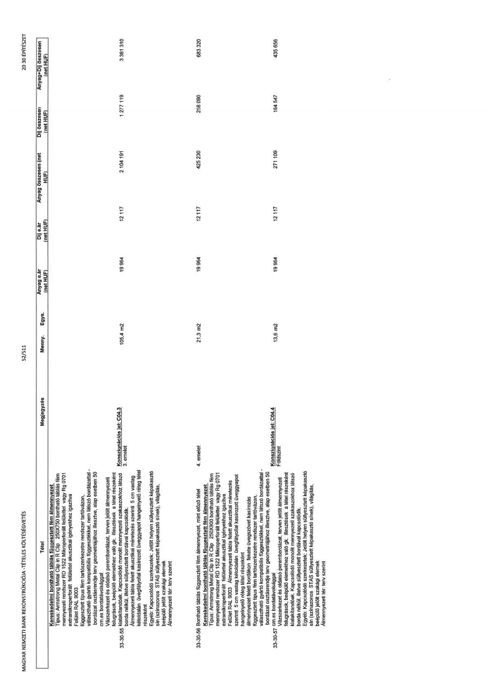

| Tétel | Megjegyzés | Menny. | Egys. | Anyag e.ár (net HUF) | Díj e.ár (net HUF) | Anyag összesen (net HUF) | Díj összesen (net HUF) | Anyag+Díj összesen (net HUF) |
|---|---|---|---|---|---|---|---|---|
| 33-30-55 Kereskedelmi bontható táblás függesztett fém álmennyezet Típus: Armstrong Metal Clip in R Clip 250X750 bontható táblás fém mennyezeti rendszer RD 1522 Mikroperforált felülettel vagy Rg 0701 extramikroperforált felülettel felülettel akusztikai igényekhez igazítva Felület RAL 9003 függesztett típus fém tartószerkezetre rendszer tartóvázon, választható gyártó kompatibilis függesztőkkel, nem látszó bordázattal - bordázat osztásrendje terv geometriájához illesztve, alap esetben 50 cm.es bordatávolsággal Vázszerkezet és oldalsó perembordázat, terven jelölt álmennyezeti felugrások, beépülő elemekhez való gk. illesztések a tétel részeként kialakítandók. Kapcsolódó monolit mennyezeti szakaszokhoz látszó borda nélkül, illetve süllyesztett bordával kapcsolódik. Álmennyezeti tábla felett akusztikai méretezés szerinti 5 cm vastag kétoldalán üvegfátyollal kasírozott üveggyapot hangelnyelő réteg tétel részeként Egyéb: Kapcsolódó szerkezetek: Jelölt helyen süllyesztett képakasztó sín (színazonos STAS süllyesztett képakasztó sínek), világítás, beépülő jelölt szakági elemek Álmennyezeti tér: terv szerint | Konszignációs jel: C04.3 3. emelet | 105,4 | m2 | 19 964 | 12 117 | 2 104 191 | 1 277 119 | 3 381 310 |
| 33-30-56 Bontható táblás függesztett fém álmennyezet, mint előző tétel | 4. emelet | 21,3 | m2 | 19 964 | 12 117 | 425 230 | 258 090 | 683 320 |
| 33-30-57 Kereskedelmi bontható táblás függesztett fém álmennyezet Típus: Armstrong Metal Clip in R Clip 250X900 bontható táblás fém mennyezeti rendszer RD 1522 Mikroperforált felülettel vagy Rg 0701 extramikroperforált felülettel felülettel akusztikai igényekhez igazítva Felület RAL 9003 Álmennyezeti felett bordákon fekete üvegszövet kasírozás függesztett típus fém tartószerkezetre rendszer tartóvázon, választható gyártó kompatibilis függesztőkkel, nem látszó bordázattal - bordázat osztásrendje terv geometriájához illesztve, alap esetben 50 cm.es bordatávolsággal Vázszerkezet és oldalsó perembordázat, terven jelölt álmennyezeti felugrások, beépülő elemekhez való gk. illesztések a tétel részeként kialakítandók. Kapcsolódó monolit mennyezeti szakaszokhoz látszó borda nélkül, illetve süllyesztett bordával kapcsolódik. Egyéb: Kapcsolódó szerkezetek: Jelölt helyen süllyesztett képakasztó sín (színazonos STAS süllyesztett képakasztó sínek), világítás, beépülő jelölt szakági elemek Álmennyezeti tér: terv szerint | Konszignációs jel: C04.4 Földszint | 13,6 | m2 | 19 964 | 12 117 | 271 109 | 164 547 | 435 656 |
